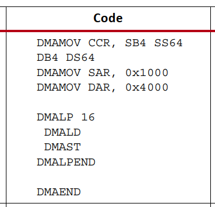
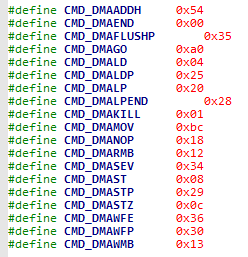
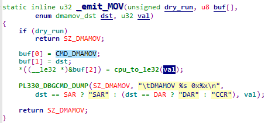
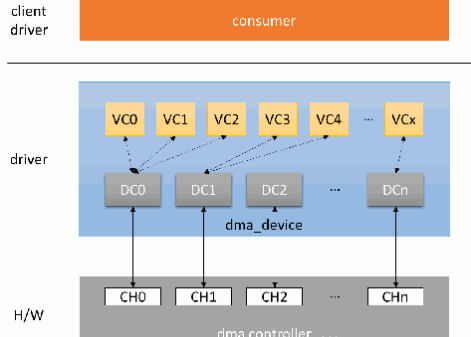

DMA驱动#
DMA简介#
CPU和内存是计算机组成中都是不可或缺的部分。和CPU相比，内存是非常慢速的拖油瓶，CPU的速度被内存限制，同时又不得不等待内存处理而无法去处理其他事件。所以使用CPU搬运内存数据，是非常浪费资源的。因此专门用于搬运内存数据的器件DMA应运而生。
DMA是Direct Memory Access的缩写，也就是直接内存读写，所谓的直接，也就是内存到内存，不通过CPU。DMA的可以支持内存到外设、外设到内存、内存到内存的数据交互，必要时节省很多CPU资源。当然，虽然DMA几乎不占用CPU，但还是会占用系统总线的。
DMAC#
这里的DMAC指的是DMA controller即DMA控制器。一个外设支持DMA不代表它能够主动发起DMA操作只能说至少他支持被动DMA数据读写。前面我们说DMA几乎不占用CPU资源，是因为DMA传输需要有CPU发起，之后就全部交由DMAC搬运数据了。DMAC搬运过程中，涉及到以下关键概念。
DMA channels#
大部分DMAC支持多路DMA，也就是DMA channels。DMA channel相当于是DMAC提供的数据传输通道也就是数据传输的方法，解决了如何传输的问题。实际上DMA channel是一个抽象的概念，不是物理通道。前面我们说过，DMA传输还是会占用总线资源的，总线资源十分有限，因此同时进行多路DMA传输不太现实。
抽象出DMA channel概念的目的实际是为了方便管理DMA的client，让每个client都独占一格通道，但实际上传输时DMAC会进行先后仲裁，串行传输。
DMA request line#
request line指代DMA设备和DMAC之间的物理连线。这条线用于DMA设备通知DMAC是否可以开书传输，即解决了何时传输的问题。通常每个DMA数据收发节点(endpoint)都有DMA request line连接到DMAC。
从主从的角度看，DMA channel由DMAC提供，相当于主cotroller，DMA request line和DMA设备绑定相当于从client。在系统中DMA request line的数量通常比DMA channel多，因为DMA request line不是每一刻都处于活跃状态。
transfer size、transfer wide、burst size#
transfer wide可以理解为单次传输数据的大小，和串口来比较的话，串口一次只能传一个字节，而DMA则可以选择一次能传输的数据大小。在这基础上的transfer size则是传输的次数，而不是单纯的总大小，也就是说DMA传输总长度实际上是transfer size乘上transfer wide。
burst size是指DMAC内部缓存大小。当DMA传输的源或目的是内存memory时，DMAC会先读取数据到缓存，再传入或传出。
scatter-gather#
DMA操作必须是连续的物理内存，在实际应用中，难免会遇到处理物理内存不连续的数据的情况，scatter-gather指的就是把不连续的数据拷贝到连续的buffer中的操作。这个操作过程可以用软件实现，也有直接的硬件支持。具体的实现暂且不用关心，这里主要是强调DMA操作必须是连续的物理内存这件事。
PL330#
PL330是ZYNQ的PS端使用的DMAC。PL330的使用可参考xilinx的数据手册” ug585-Zynq-7000-TRM”的chapter9（注意实际使用与手册中的介绍略有出入）。
为了方便使用，PL330专门提供了完善的指令集，但在C语言环境下，无法直接去使用。很遗憾的是xilinx的手册中并没有说明指令集以外的用法，好在根据内核中现有的PL330驱动代码，结合手册中的汇编例程，也算是整理出了C语言用法的七七八八。
所谓的指令集可以理解成是寄存器的预设。那我们必然可以通过寄存器来完成指令集完成的操作。按照这个思路先看看一个完整的DMA操作需要指令。
这是手册中一个内存到内存的DMA传输汇编示例，这款里的指令就是PL330提供的。
DMAMOV指令是赋值指令。指令的第一个参数是赋值目标，DMAMOV指令只能给CCR、SAR、DAR这三个目标赋值。第二个参数是赋给目标的值。那我们再看看这三个赋值目标又分别指代什么。在手册的附录B中找到DMAC相关的寄存器，不难找到这三组寄存器。
CCR寄存器用于设置源读出数据的size和wide、目的写入数据的size和wide。size和wide前面说过，DMA传输的总长为size*wide。
SAR寄存器用于设置源的物理地址。DAR寄存器用于设置目的的物理地址。
也就是说通过DMAMOV指令，我们就已经完成源、目的、长度三个要素的设置，只需要触发DMA开始传输即可。再往下看。
DMALP是设置DMA传输循环次数，和DMALPEND成对。循环做什么事？就是DMALD、DMAST两件事。
DMA的传输，被DMAC分成了两步，先从源读出数据，再写入目的。CCR寄存器也罢读出和写入的长度设置区分开来。而这里循环的两个指令DMALD和DMAST也就分别对应的读出和写入。
到这里DMAC使用的步骤就很开朗了，接下来就是如何用C语言通过寄存器去实现。这里我们参考linux内核源码目录中的/drivers/dma.pl330.c。在这个文件中尝试着搜索一下DMAMOV这个指令，果然真的找到了所用指令的宏，如下：
通过宏定义把每一个指令对应到一个值，但还无法看出这个值的具体含义。再看看在哪里调用了DMAMOV宏。可以找到这样一个函数。
这个函数把指令宏的值，dst，val三个值依次放到一个buffer的从0开始三个连续元素中。dst看下面的代码，不难理解，他指代的就是SAR、DAR、CCR三个寄存器地址之一，而最后的val就是赋给寄存器的值。
同样的再去看一些其他的指令，几乎都是如此，指令、参数1、参数2打包到一个buffer中。那我们大概能猜到指令组织的方法。但指令如此之多，也没能在寄存器手册中找到所有指令对应的寄存器，那组织的指令该如何执行？
阅读pl330.c。最终，我们找到了932行的_execute_DBGINSN()函数。execute是执行的意思，DBGINSN我们能在手册中找到两个寄存器DBGINSN0和DBGINSN1，但是他们的解释都比较暧昧，大概可以理解为，两个寄存器，就是用来执行指令的。
DBGINSN0的高16位和DBGINSN1的全32，再手册中都没有解释清楚，分析pl330.c最终发现，DBGINSN0的16~23位是拼入了命令DMAGO，DBGINSN1中输入了我们指令buffer 的首地址。最终我们通过给寄存器DBGCMD的bit0写入0，DMAC就开始指令指令了。
接下来再对照源码去分析：
#include <linux/module.h>
#include <linux/kernel.h>
#include <linux/fs.h>
#include <linux/device.h>
#include <linux/init.h>
#include <linux/cdev.h>
#include <linux/platform_device.h>
#include <linux/miscdevice.h>
#include <linux/ioport.h>
#include <linux/of.h>
#include <linux/uaccess.h>
#include <linux/interrupt.h>
#include <linux/of_irq.h>
#include <linux/irq.h>
#include <linux/timer.h>
#include <linux/dma-mapping.h>
#include <asm/io.h>
#include <asm/uaccess.h>
#include <asm/irq.h>
#include <asm/byteorder.h>
//驱动个数
#define AX_DRV_CNT 1
//设备节点名称
#define AX_DRV_NAME "ax_dma"
//AMBA总线时钟使能
#define DMA_CLKEN_ADDR 0xF800012C
volatile u32 * clken;
//基地址
#define DMA_BASE_ADDR 0xF8003000
//DBGSTATUS
#define DMA_DBGSTATUS_OFFSET 0x00000D00
volatile u32 * dbgstatus;
//DBGCMD
#define DMA_DBGCMD_OFFSET 0x00000D04
volatile u32 * dbgcmd;
//DBGINST0
#define DMA_DBGINST0_OFFSET 0x00000D08
volatile u32 * dbginst0;
//DBGINST1
#define DMA_DBGINST1_OFFSET 0x00000D0C
volatile u32 * dbginst1;
//cache
#define DMA_CACH_OFFSET 0x00000E04
volatile u32 * cache;
//DMA中断使能
#define DMA_IRQ_EN_OFFSET 0x00000020
volatile u32 * irqen;
//DMA中断清除
#define DMA_IRQ_CLR_OFFSET 0x0000002C
volatile u32 * irqclr;
//指令集
#define CMD_DMAADDH 0x54
#define CMD_DMAEND 0x00
#define CMD_DMAFLUSHP 0x35
#define CMD_DMAGO 0xa0
#define CMD_DMALD 0x04
#define CMD_DMALDP 0x25
#define CMD_DMALP 0x20
#define CMD_DMALPEND 0x28
#define CMD_DMAKILL 0x01
#define CMD_DMAMOV 0xbc
#define CMD_DMANOP 0x18
#define CMD_DMARMB 0x12
#define CMD_DMASEV 0x34
#define CMD_DMAST 0x08
#define CMD_DMASTP 0x29
#define CMD_DMASTZ 0x0c
#define CMD_DMAWFE 0x36
#define CMD_DMAWFP 0x30
#define CMD_DMAWMB 0x13
//指令长度
#define SZ_DMAADDH 3
#define SZ_DMAEND 1
#define SZ_DMAFLUSHP 2
#define SZ_DMAGO 6
#define SZ_DMALD 1
#define SZ_DMALDP 2
#define SZ_DMALP 2
#define SZ_DMALPEND 2
#define SZ_DMAKILL 1
#define SZ_DMAMOV 6
#define SZ_DMANOP 1
#define SZ_DMARMB 1
#define SZ_DMASEV 2
#define SZ_DMAST 1
#define SZ_DMASTP 2
#define SZ_DMASTZ 1
#define SZ_DMAWFE 2
#define SZ_DMAWFP 2
#define SZ_DMAWMB 1
//指令队列总长
#define INSTR_Q_MAX 500
//缓冲区大小
#define BUF_SIZE (512*64)
//DMAMOV指令对应的三个目标地址下标
enum dmamov_dst {
SAR = 0,
CCR,
DAR,
};
//DMA源缓冲区
static char *src;
static u32 src_phys;
//DMA目标缓冲区
static char *dst;
static u32 dst_phys;
//DMA指令缓冲区
static char *instr_q;
static u32 instr_q_phys;
struct ax_dma_drv {
dev_t devid; //设备号
struct cdev cdev; //字符设备
struct class *class; //类
struct device *device; //设备
int major; //主设备号
};
struct ax_dma_drv ax_dma;
static irqreturn_t dma_irq(int irq, void *dev_id)
{
u32 reg;
//清除通道1中断标志
iowrite32(0x000000ff, irqclr);
if(!memcmp(src, dst, 160))
{
printk("dma irq test ok\r\n");
}
return IRQ_HANDLED;
}
static int dma_open(struct inode *inode,struct file *file)
{
printk("dma_open\r\n");
return 0;
}
static int dma_write(struct file *file,const char __user *buf, size_t count,loff_t *ppos)
{
//指令长度计数
int instr_cnt = 0, loop_start = 0, lpcount;
u32 reg;
printk("dma_write\r\n");
memset(instr_q, 0x00, INSTR_Q_MAX);
memset(src, 0xAA, 160);
memset(dst, 0x55, 160);
//设置数据源地址
instr_q[instr_cnt + 0] = (char)(CMD_DMAMOV);
instr_q[instr_cnt + 1] = (char)(SAR);
*((__le32 *)&instr_q[instr_cnt + 2]) = cpu_to_le32(src_phys);
//指令总长计数
instr_cnt += SZ_DMAMOV;
//设置数据目标地址
instr_q[instr_cnt + 0] = (char)(CMD_DMAMOV);
instr_q[instr_cnt + 1] = (char)(DAR);
*((__le32 *)&instr_q[instr_cnt + 2]) = cpu_to_le32(dst_phys);
//指令总长计数
instr_cnt += SZ_DMAMOV;
//设置数据传输规则, 每个循环传输burst_size * burst_len, 源和目标地址变化规则等
instr_q[instr_cnt + 0] = (char)(CMD_DMAMOV);
instr_q[instr_cnt + 1] = (char)(CCR);
//0x0005c017 -> 0000 0000 0000 0001 0111 0000 0001 0111
//len = 2byte, instr_cnt = 8byte, inc = Incrementing-address
//单次循环数据大小 = burst_size * burst_len = 2 * 8 = 16
*((__le32 *)&instr_q[instr_cnt + 2]) = cpu_to_le32(0x0005c017);
//指令总长计数
instr_cnt += SZ_DMAMOV;
//循环装载数据, 输出FIFO
instr_q[instr_cnt + 0] =(char)(CMD_DMALP);
instr_q[instr_cnt + 1] =(char)(100); //循环次数
instr_cnt += SZ_DMALP;
loop_start = instr_cnt;
for(lpcount = 0; lpcount < 100; lpcount ++)
{
//从源读数据
instr_q[instr_cnt + 0] =(char)(CMD_DMALD);
instr_cnt += SZ_DMALD;
instr_q[instr_cnt + 0] =(char)(CMD_DMARMB);
instr_cnt += SZ_DMARMB;
//写数据到目标地址
instr_q[instr_cnt + 0] =(char)(CMD_DMAST);
instr_cnt += SZ_DMAST;
instr_q[instr_cnt + 0] =(char)(CMD_DMAWMB);
instr_cnt += SZ_DMAWMB;
}
//申请中断
instr_q[instr_cnt + 0] = (char)(CMD_DMASEV);
instr_q[instr_cnt + 1] = (char)(1 << 3);
instr_cnt += SZ_DMASEV;
//等待dmac空闲
do {
reg = ioread32(dbgstatus);
} while((reg & 0x01) == 0x01);
iowrite32((0 << 24) | (CMD_DMAGO << 16) | (0 << 8) | (0 << 0), dbginst0);
iowrite32(instr_q_phys, dbginst1);
iowrite32(0, dbgcmd);
printk("dma go\r\n");
return 0;
}
static int dma_release(struct inode *inode, struct file *filp)
{
printk("dma_release\r\n");
return 0;
}
static struct file_operations dma_lops=
{
.owner = THIS_MODULE,
.open = dma_open,
.write = dma_write,
.release = dma_release,
};
static int dma_init(void)
{
int err;
u32 reg;
printk("dma_init\r\n");
//构建设备号
alloc_chrdev_region(&ax_dma.devid, 0, AX_DRV_CNT, AX_DRV_NAME);
//注册设备
cdev_init(&ax_dma.cdev, &dma_lops);
cdev_add(&ax_dma.cdev, ax_dma.devid, AX_DRV_CNT);
//创建类
ax_dma.class = class_create(THIS_MODULE, AX_DRV_NAME);
if(IS_ERR(ax_dma.class))
{
return PTR_ERR(ax_dma.class);
}
//创建设备
ax_dma.device = device_create(ax_dma.class, NULL, ax_dma.devid, NULL, AX_DRV_NAME);
if(IS_ERR(ax_dma.device))
{
return PTR_ERR(ax_dma.device);
}
//注册中断
err = request_irq(33, dma_irq, IRQF_TRIGGER_HIGH, "ax-dmac2", NULL);
if(err < 0) printk("irq err=%d\n", err);
//分配SRC对应的缓冲区
src = dma_alloc_coherent(NULL, BUF_SIZE, &src_phys, GFP_KERNEL);
if (NULL == src)
{
printk("can't alloc buffer for src\n");
return -ENOMEM;
}
//分配DST对应的缓冲区
dst = dma_alloc_coherent(NULL, BUF_SIZE, &dst_phys, GFP_KERNEL);
if (NULL == dst)
{
dma_free_coherent(NULL, BUF_SIZE, src, src_phys);
printk("can't alloc buffer for dst\n");
return -ENOMEM;
}
instr_q = dma_alloc_coherent(NULL, INSTR_Q_MAX, &instr_q_phys, GFP_KERNEL);
if (NULL == instr_q)
{
dma_free_coherent(NULL, BUF_SIZE, src, src_phys);
dma_free_coherent(NULL, BUF_SIZE, dst, dst_phys);
printk("can't alloc buffer for instr_q\n");
return -ENOMEM;
}
//虚拟地址映射
dbgstatus = ioremap(DMA_BASE_ADDR + DMA_DBGSTATUS_OFFSET, 4);
dbgcmd = ioremap(DMA_BASE_ADDR + DMA_DBGCMD_OFFSET, 4);
dbginst0 = ioremap(DMA_BASE_ADDR + DMA_DBGINST0_OFFSET, 4);
dbginst1 = ioremap(DMA_BASE_ADDR + DMA_DBGINST1_OFFSET, 4);
irqen = ioremap(DMA_BASE_ADDR + DMA_IRQ_EN_OFFSET, 4);
irqclr = ioremap(DMA_BASE_ADDR + DMA_IRQ_CLR_OFFSET, 4);
clken = ioremap(DMA_CLKEN_ADDR, 4);
cache = ioremap(DMA_BASE_ADDR + DMA_CACH_OFFSET, 4);
//使能AMBA时钟
reg = ioread32(clken);
iowrite32(reg | 0x00000001, clken);
//使能通道1中断
iowrite32(0x000000ff, irqen);
//读取cache寄存器以初始化cache
reg = ioread32(cache);
return 0;
}
static void dma_exit(void)
{
//释放中断
free_irq(33, NULL);
//删除设备
cdev_del(&ax_dma.cdev);
unregister_chrdev_region(ax_dma.major, AX_DRV_CNT);
//注销类
device_destroy(ax_dma.class, ax_dma.devid);
class_destroy(ax_dma.class);
//释放缓冲区
dma_free_coherent(NULL, BUF_SIZE, src, src_phys);
dma_free_coherent(NULL, BUF_SIZE, dst, dst_phys);
dma_free_coherent(NULL, BUF_SIZE, instr_q, instr_q_phys);
//失能DMA中断
iowrite32(0x00000000, irqen);
//释放虚拟地址
iounmap(dbgstatus);
iounmap(dbgcmd);
iounmap(dbginst0);
iounmap(dbginst1);
iounmap(irqen);
iounmap(irqclr);
iounmap(clken);
iounmap(cache);
//test
}
//驱动入口函数标记
module_init(dma_init);
//驱动出口函数标记
module_exit(dma_exit);
/* 驱动描述信息 */
MODULE_AUTHOR("Alinx");
MODULE_ALIAS("dma");
MODULE_DESCRIPTION("DMA driver");
MODULE_VERSION("v1.0");
MODULE_LICENSE("GPL");
这个代码是以简单字符设备框架测试了pl330的DMA内存到内存的数据传输。
27~60行是一些寄存器的定义，在驱动入口函数中305~313行，把这些寄存器地址转换成虚拟地址。相应的在出口函数342~350行释放虚拟地址占用。
63~103行把pl330.c中的指令宏定义和指令长度搬运过来。112~116行把DMAMOV赋值的三个目标编号枚举搬过来。
118~128行定义了3个缓冲区分别源缓冲区、目标缓冲区和指令缓冲区。在入口函数的280~303行通过函数dma_alloc_coherent()分配了3个缓冲区，并获取了他们对应的物理地址。所谓分配缓冲区，目的是获取物理地址连续的内存方便内存到内存的DMA操作。顺便我们获取到了缓冲区对应的物理地址，pl330的操作必须直接操作物理地址，包括指令的操作也是。在出口函数中337~339行对应释放缓冲区。
131~138行定义一个设备结构体并定义变量。
看完了定义，我们再从入口函数开始看。
255~273行是很常规的字符设备注册。
276行注册了一个中断，中断号33是从设备树中使用函数irq_of_parse_and_map()获取的。在petalinux工程中查找zynq-7000.dtsi，在这个文件中能找到如下节点
dmac@f8003000 {
compatible = "arm,pl330", "arm,primecell";
reg = <0xf8003000 0x1000>;
interrupt-parent = <&intc>;
interrupt-names = "abort", "dma0", "dma1", "dma2", "dma3",
"dma4", "dma5", "dma6", "dma7";
interrupts = <0 13 4>,
<0 14 4>, <0 15 4>,
<0 16 4>, <0 17 4>,
<0 40 4>, <0 41 4>,
<0 42 4>, <0 43 4>;
#dma-cells = <1>;
#dma-channels = <8>;
#dma-requests = <4>;
clocks = <&clkc 27>;
clock-names = "apb_pclk";
};
这里有9个中断号，分别对应停止、dma0~9，这里我们获取了通道1对应的虚拟中断号33。实际上使用任意通道中断都可以，但要和后面的DMASEV指令对应，具体一会儿再说。
之后分配缓冲区和映射虚拟地址已经说过了。最后有几个寄存器操作。
316~317行使能AMBA时钟，这个时钟默认是使能的，这里实际没有使能，暂时没必要去深究原因，既然没使能，就使能一下好了。
319行使能中断，为了方便测试，这里把所有的中断都是能了。
321行需要通过读取cache寄存器以初始化cache。
再看操作函数的实现，write函数是关键。write函数实际可以分为两部分，一是拼接指令到指令缓冲区，二是通过设置DBG相关的寄存器来执行指令。
172~218行拼接指令，首先设置SAR、DAR、CCR，之后记录循环次数，然后在循环中DMALD、DMAST。这些步骤是不是就和手册中汇编例程步骤很相似。
但这里多了一步申请中断，DMASEV命令也很简单，就是触发对应通道的中断，表示DMA操作已经完成。注意这里触发中断的通道要和我们注册的中断通道一致。
指令评介完成后，先要不断查询DMAC状态，DMAC空闲后再进行实际的发送操作。
225行往DBGINST0寄存器中填值，低16位值得含义可参考手册，高16位中16~23位需要写入DMAGO指令，24~32位选择通道。
226行往DBGINST1寄存器中填值，值就是指令拼接buffer的首地址。
到这里实际上还是在设置，知道执行了227行的代码，往寄存器DBGCMD中写入0，DMA才开始真正的执行。
144行需要在中断回掉函数中清除中断标志位，否则中断会一直触发，系统就无法使用了。
linux中的DMA#
Linux DMA engine框架提供了DMA controller和DMA client两个框架。分别对应DMA提供者和DMA使用者两个角度。pl330是个DMA控制器，实际上就是站DMA提供者的角度。我们上面的例程中，使用DMA的对象实际可以具体到内存到内存，内存就是DMA的使用者。但是在上面的例程中并没有区分这样的概念，这就到这了例程的局限性。实际上前面的例程中pl330的操作都可以抽出来，他们对于其他使用者来说，都是共通的。这也是linux系统一贯的设计思路。也是因为如此，原本并不复杂DMA在这样的设计下显得有些复杂。
DMA engine框架示意图：
DMA controller驱动框架#
控制器的驱动也有现成的可用，这和前面的I2C、SPI之类的相似。我们主要还是去了解client的驱动，controller驱动稍作了解。
DMA controller框架抽象出channel对应DMAC的物理通道，又定义了虚拟的channel，软件上可以实现多个虚拟channel对应一个物理通道。
介绍一下DMA controller框架中主要涉及到的数据结构：
struct dma_device
struct dma_device定义在include/linux/dmaengine.h中。如下
struct dma_device {
unsigned int chancnt;
unsigned int privatecnt;
struct list_head channels;
struct list_head global_node;
struct dma_filter filter;
dma_cap_mask_t cap_mask;
unsigned short max_xor;
unsigned short max_pq;
enum dmaengine_alignment copy_align;
enum dmaengine_alignment xor_align;
enum dmaengine_alignment pq_align;
enum dmaengine_alignment fill_align;
#define DMA_HAS_PQ_CONTINUE (1 << 15)
int dev_id;
struct device *dev;
u32 src_addr_widths;
u32 dst_addr_widths;
u32 directions;
u32 max_burst;
bool descriptor_reuse;
enum dma_residue_granularity residue_granularity;
int (*device_alloc_chan_resources)(struct dma_chan *chan);
void (*device_free_chan_resources)(struct dma_chan *chan);
struct dma_async_tx_descriptor *(*device_prep_dma_memcpy)(struct dma_chan *chan, dma_addr_t dst, dma_addr_t src, size_t len, unsigned long flags);
struct dma_async_tx_descriptor *(*device_prep_dma_xor)(struct dma_chan *chan, dma_addr_t dst, dma_addr_t *src, unsigned int src_cnt, size_t len, unsigned long flags);
struct dma_async_tx_descriptor *(*device_prep_dma_xor_val)(struct dma_chan *chan, dma_addr_t *src, unsigned int src_cnt, size_t len, enum sum_check_flags *result, unsigned long flags);
struct dma_async_tx_descriptor *(*device_prep_dma_pq)(struct dma_chan *chan, dma_addr_t *dst, dma_addr_t *src, unsigned int src_cnt, const unsigned char *scf, size_t len, unsigned long flags);
struct dma_async_tx_descriptor *(*device_prep_dma_pq_val)(struct dma_chan *chan, dma_addr_t *pq, dma_addr_t *src, unsigned int src_cnt, const unsigned char *scf, size_t len, enum sum_check_flags *pqres, unsigned long flags);
struct dma_async_tx_descriptor *(*device_prep_dma_memset)(struct dma_chan *chan, dma_addr_t dest, int value, size_t len, unsigned long flags);
struct dma_async_tx_descriptor *(*device_prep_dma_memset_sg)( struct dma_chan *chan, struct scatterlist *sg, unsigned int nents, int value, unsigned long flags);
struct dma_async_tx_descriptor *(*device_prep_dma_interrupt)(struct dma_chan *chan, unsigned long flags);
struct dma_async_tx_descriptor *(*device_prep_dma_sg)(struct dma_chan *chan, struct scatterlist *dst_sg, unsigned int dst_nents, struct scatterlist *src_sg, unsigned int src_nents, unsigned long flags);
struct dma_async_tx_descriptor *(*device_prep_slave_sg)(struct dma_chan *chan, struct scatterlist *sgl, unsigned int sg_len, enum dma_transfer_direction direction, unsigned long flags, void *context);
struct dma_async_tx_descriptor *(*device_prep_dma_cyclic)(struct dma_chan *chan, dma_addr_t buf_addr, size_t buf_len, size_t period_len, enum dma_transfer_direction direction, unsigned long flags);
struct dma_async_tx_descriptor *(*device_prep_interleaved_dma)(
struct dma_chan *chan, struct dma_interleaved_template *xt, unsigned long flags);
struct dma_async_tx_descriptor *(*device_prep_dma_imm_data) (struct dma_chan *chan, dma_addr_t dst, u64 data, unsigned long flags);
int (*device_config)(struct dma_chan *chan, struct dma_slave_config *config);
int (*device_pause)(struct dma_chan *chan);
int (*device_resume)(struct dma_chan *chan);
int (*device_terminate_all)(struct dma_chan *chan);
void (*device_synchronize)(struct dma_chan *chan);
enum dma_status (*device_tx_status)(struct dma_chan *chan, dma_cookie_t cookie, struct dma_tx_state *txstate);
void (*device_issue_pending)(struct dma_chan *chan);
};
channels:链表头。
cap_mask:表示controller的传输能力，需要和后面device_prep_dma_xxx形式的回调函数对应。常见取值如下:
DMA_MEMCPY:可进行memory copy。
DMA_MEMSET:可进行memory set。
DMA_SG:可进行scatter list传输。
DMA_CYCLIC:可进行cyclic类的传输。
DMA_INTERLEAVE:可进行交叉传输。
src_addr_widths:表示controller支持哪些宽度的src类型。
dst_addr_widths:表示controller支持哪些宽度的dst类型。
directions:表示controller支持的传输方向取值参考枚举dma_transfer_direction。
max_burst:最大的burst传输的size。
descriptor_reuse:表示controller的传输描述能不能复用。
device_alloc_chan_resources:client申请channel时会调用。
device_free_chan_resources:client释放channel时会调用。
device_prep_dma_xxx:client通过dmaengine_prep_xxx获取传输描述符时会调用。
device_config:client调用dmaengine_slave_configchannel时会调用。
device_pause:client调用dmaengine_pause时会调用。
device_resume:client调用dmaengine_resume时会调用。
device_terminate_all:client调用dmaengine_terminate_xxx时会调用。
device_issue_pending:client调用dma_async_issue_pending启动传输时会调用。
DMAcontroller驱动需要实现这些函数的具体处理内容，相当于字符设备框架中的ops操作函数。
1) struct dma_chan 定义如下：
struct dma_chan {
struct dma_device *device;
dma_cookie_t cookie;
dma_cookie_t completed_cookie;
/* sysfs */
int chan_id;
struct dma_chan_dev *dev;
struct list_head device_node;
struct dma_chan_percpu __percpu *local;
int client_count;
int table_count;
/* DMA router */
struct dma_router *router;
void *route_data;
void *private;
};
device:指向该channel所在的dma controller。 cookie:client以该channel为操作对象获取传输描述符时，dma controller返回给client的最后一个cookie。 completed_cookie:在当前channel上最后一次完成的传输的cookie。 device_node:于将该channel添加到dma_device的channel列表中。 1) struct virt_dma_cha
定义在文件drivers/dma/virt-dma.h中如下：
struct virt_dma_desc {
struct dma_async_tx_descriptor tx;
/* protected by vc.lock */
struct list_head node;
};
struct virt_dma_chan {
struct dma_chan chan;
struct tasklet_struct task;
void (*desc_free)(struct virt_dma_desc *);
spinlock_t lock;
/* protected by vc.lock */
struct list_head desc_allocated;
struct list_head desc_submitted;
struct list_head desc_issued;
struct list_head desc_completed;
struct virt_dma_desc *cyclic;
};
chan:一个struct dma_chan类型的变量，用于和client交互。 task:一个tasklet，等待该虚拟channel的传输完成。 desc_allocated、desc_submitted、desc_issued、desc_completed:四个链表头，用于保存不同状态的虚拟channel描述符。 DMA controller框架相关API如下：
struct dma_device注册和注销
int dma_async_device_register(struct dma_device *device); void dma_async_device_unregister(struct dma_device *device); |
struct dma_device变量初始化完成后，调用dma_async_device_register向内核注册。注册成功后dma_device会放在一个名称为dma_device_list的全局链表上，以便后面使用。 dma_async_device_unregister是相对的注销函数。
cookie相关接口
DMA cookie表示DMA engine在数据传送中使用的一段连续内存。
static inline void dma_cookie_init(struct dma_chan *chan) static inline dma_cookie_t dma_cookie_assign(struct dma_async_tx_descriptor *tx) static inline void dma_cookie_complete(struct dma_async_tx_descriptor *tx) static inline enum dma_status dma_cookie_status(struct dma_chan *chan, dma_cookie_t cookie, struct dma_tx_state *state) |
dma_cookie_init:初始化channel中的cookie、completed_cookie。 dma_cookie_assign:为指针的传输描述分配一个cookie。 dma_cookie_complete:当一个传输完成时，可调用该接口更新该传输所对应channel的completed_cookie字段。 dma_cookie_status:获取指定channel指定cookie的传输状态。 DMA controller驱动实例可以参考pl330.c。大致流程如下：
定义struct dma_device变量并初始化、根据硬件实现必要的回掉函数。
根据controller支持的channel数，为每个channel定义一个struct dma_chan变量并初始化后，将每个channel都添加到dma_device的channels链表中。
调用dma_async_device_register向内核注册dma_device。
DMA client驱动框架#
从源和目标的不同可以把DMA划分为四类：内存到内存、内存到外设、外设到内存、外设到外设。因为内存可以使用memcpy、memset等操作，linux engine中把内存到内存这一部分分离出来单独提供了一套API-Async TX API。而剩余的三类就共用一个结构Slave-DMA API。这里的Slave指代的client视角，也就是DMA的使用者。
DMA client框架中主要涉及到的数据结构如下：
struct dma_slave_config
定义在include/linux/dmaengine.h中如下：
struct dma_slave_config {
enum dma_transfer_direction direction;
phys_addr_t src_addr;
phys_addr_t dst_addr;
enum dma_slave_buswidth src_addr_width;
enum dma_slave_buswidth dst_addr_width;
u32 src_maxburst;
u32 dst_maxburst;
bool device_fc;
unsigned int slave_id;
};
direction:传输方向，取值参考enum dma_transfer_direction。
src_addr:传输方向是外设到内存或者外设到外设时，读取数据的位置。内存到设备类型的channel不需配置该参数。
dst_addr:传输方向是内存到外设或者外设到外设时，写入数据的位置。外设到内存类型的channel不需配置该参数。
src_addr_width:src地址的宽度。
dst_addr_width:dst地址的宽度。
src_maxburst:src最大可传输的burst size，单位是src_addr_width。
dst_maxburst:dst最大可传输的burst size，单位是dst_addr_width。
slave_id:外设对于controller的标识。
struct dma_async_tx_descriptor
定义如下：
struct dma_async_tx_descriptor {
dma_cookie_t cookie;
enum dma_ctrl_flags flags; /* not a 'long' to pack with cookie */
dma_addr_t phys;
struct dma_chan *chan;
dma_cookie_t (*tx_submit)(struct dma_async_tx_descriptor *tx);
int (*desc_free)(struct dma_async_tx_descriptor *tx);
dma_async_tx_callback callback;
void *callback_param;
struct dmaengine_unmap_data *unmap;
#ifdef CONFIG_ASYNC_TX_ENABLE_CHANNEL_SWITCH
struct dma_async_tx_descriptor *next;
struct dma_async_tx_descriptor *parent;
spinlock_t lock;
#endif
};
cookie:一个整型数，用于追踪本次传输。一般情况下，controller会在内部维护一个递增的number，当client获取传输描述时都会将该number赋给cookie，然后递增。
flags:enum dma_ctrl_flags枚举。
chan:对应的channel。
tx_submit:controller提供的回调函数，用于把改描述符提交到待传输列表。
desc_free:controller提供的回调函数，用于释放描述符。
callback:传输完成的回调函数
callback_param:callback的参数。
使用Slave-DMA API的DMA client实现步骤大致如下：
申请DMA channel
struct dma_chan *dma_request_chan(struct device *dev, const char *name); void dma_release_channel(struct dma_chan *chan); |
dma_request_chan向内核申请dma_chan。 dma_release_channel则是相对的释放dma_chan。
设置DMA channel参数
设置参数使用下面的函数
int dmaengine_slave_config(struct dma_chan *chan, struct dma_slave_config *config) |
首先把配置内容用struct dma_slave_config表示，在使用该函数提交配置信息。
获取描述符
在DMA启动传输之前，client需要把传输的信息(src、dst等)告知controller，controller确认后就会返回一个描述符给client，client使用这个描述符控制跟踪这次传输。
根据不同的传输类型，使用下面三个接口来获取描述符
struct dma_async_tx_descriptor *dmaengine_prep_slave_sg( struct dma_chan *chan, struct scatterlist *sgl, unsigned int sg_len, enum dma_data_direction direction, unsigned long flags); struct dma_async_tx_descriptor *dmaengine_prep_dma_cyclic( struct dma_chan *chan, dma_addr_t buf_addr, size_t buf_len, size_t period_len, enum dma_data_direction direction); struct dma_async_tx_descriptor *dmaengine_prep_interleaved_dma( struct dma_chan *chan, struct dma_interleaved_template *xt, unsigned long flags); |
提交启动传输
使用下面的函数提交描述符
dma_cookie_t dmaengine_submit(struct dma_async_tx_descriptor *desc) |
使用下面的函数启动传输
void dma_async_issue_pending(struct dma_chan *chan); |
等待传输结束
等待传输可以通过回掉函数，也可以通过dma_async_is_tx_complete等函数查询传输是否完成。另外还可以使用maengine_pause、dmaengine_resume函数，暂停、终止传输。
client简单的demo如下：
#include<linux/dmaengine.h>
#include<linux/dma-mapping.h>
#include<linux/types.h>
#include<linux/slab.h>
#include<linux/module.h>
#include<linux/init.h>
#include<linux/fs.h>
#include<linux/sched.h>
#include <linux/miscdevice.h>
#include<linux/device.h>
#include<linux/string.h>
#include<linux/errno.h>
#include<linux/types.h>
#include<linux/slab.h>
#include<asm/uaccess.h>
#include <asm/delay.h>
#define DEVICE_NAME "ax_dma"
#define PL_ADDR_SRC 0x40000000
#define MAX_SIZE (512*64)
static char *src;
static char *dst;
dma_addr_t dma_src;
dma_addr_t dma_dst;
struct dma_chan *chan;
struct dma_device *dev;
struct dma_async_tx_descriptor *tx = NULL;
enum dma_ctrl_flags flags;
dma_cookie_t cookie;
void dma_cb(void *dma_async_param)
{
if(!memcmp(src, dst, MAX_SIZE))
{
printk("dma irq test ok\r\n");
}
}
static int dma_open(struct inode *inode, struct file *file)
{
printk("dma_open\r\n");
return 0;
}
static int dma_release(struct inode *indoe, struct file *file)
{
printk("dma_release\r\n");
return 0;
}
static ssize_t dma_read(struct file *filp, char __user *buf, size_t size, loff_t *ppos)
{
int ret = 0;
tx = dev->device_prep_dma_memcpy(chan, dma_dst, dma_src, MAXSIZE, flags);
if (!tx){
printk(KERN_INFO "Failed to prepare DMA memcpy");
}
tx->callback = dma_cb;
tx->callback_param = NULL;
cookie = tx->tx_submit(tx); //submit the desc
if (dma_submit_error(cookie)){
printk("DMA tx submit failed");
}
dma_async_issue_pending(chan);//begin dma transfer
return ret;
}
static struct file_operations ax_fops =
{
.owner = THIS_MODULE,
.open = dma_open,
.read = dma_read,
.release = dma_release,
};
static struct miscdevice dma_misc =
{
.minor = MISC_DYNAMIC_MINOR,
.name = DEVICE_NAME,
.fops = &ax_fops,
};
static int __init dma_init( void )
{
int ret=0;
int i = 0;
dma_cap_mask_t mask;
ret = misc_register(&dma_misc);
if(ret)
{
printk("misc_register failed!\n");
return 0;
}
src = (char *)ioremap(PL_ADDR_SRC, MAX_SIZE);
dma_src = PL_ADDR_SRC;
dst = dma_alloc_coherent(NULL, size, &dma_dst, GFP_KERNEL);
dma_cap_zero(mask);
dma_cap_set(DMA_SLAVE, mask);
chan = dma_request_channel(mask,NULL,NULL);
flags = DMA_CTRL_ACK | DMA_PREP_INTERRUPT;
dev = chan->device;
memset(src, 0x5A, MAX_SIZE);
return 0;
}
static void __exit dma_exit( void )
{
misc_deregister(&dma_misc);
iounmap(PL_ADDR_SRC);
dma_free_coherent(NULL, MAX_SIZE, dst, &dma_dst);
dma_release_channel(chan);
}
//驱动入口函数标记
module_init(dma_init);
//驱动出口函数标记
module_exit(dma_exit);
/* 驱动描述信息 */
MODULE_AUTHOR("Alinx");
MODULE_ALIAS("dma");
MODULE_DESCRIPTION("DMA driver");
MODULE_VERSION("v1.0");
MODULE_LICENSE("GPL");